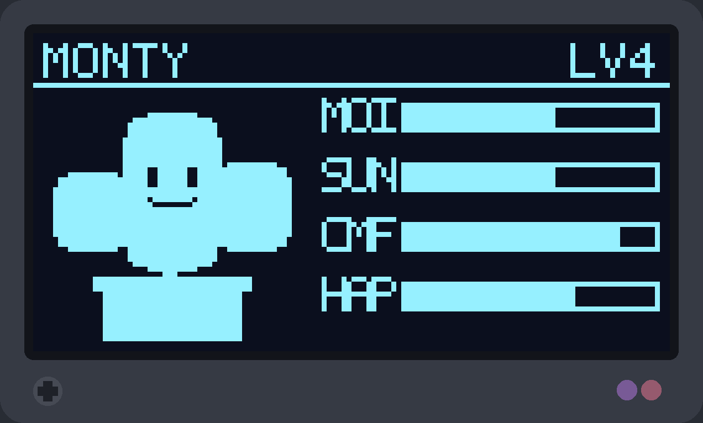
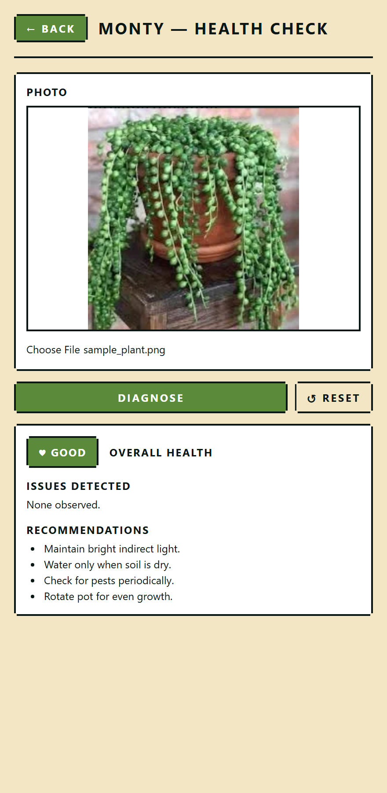

Plantogachi
I founded Plantogachi and lead its hardware and firmware. The product turns a houseplant into a Tamagotchi: an ESP32-S3 sensor puck reads the plant, streams telemetry over TLS, and drives a pixel-art character in a phone app. I shipped an end-to-end MVP and tested it across 12+ customer-discovery interviews. The hardware is still a work in progress, so this page shows the software proof of concept.
Motivation
People kill houseplants because care gives no feedback until the plant already looks sick. I make the plant's state legible: the puck measures soil moisture, light, temperature, and humidity, and the app turns those readings into a character that reacts.
My role
A solo project: I designed the enclosure in SolidWorks, wrote the ESP32-S3 sensor drivers and TLS telemetry, set the bill of materials, and built the app.
Technical approach
Firmware. An ESP32-S3 reads soil moisture, light, temperature, and humidity, then POSTs each reading over TLS to /api/v1/telemetry. I tuned the sample-and-sleep duty cycle for a 3-week battery.
Enclosure. A tool-free snap-fit puck in SolidWorks on 2 mm uniform walls held the device BOM to $32 at prototype volume ($11 at bulk); the radio transmits through the plastic, needing no antenna cutout.
Software the puck feeds. The app IDs the plant from one photo through PlantNet at 86% accuracy, generates a pixel-art sprite, and runs a health check through Gemini Vision. A GET /plants/{id}/forecast endpoint also reasons over reading history and species care profile with Gemini, cached 12 hours. A demo slider stands in for the puck.
A second hardware node, single source of truth. Beyond the puck, I built a standalone ESP32 display device with a monochrome screen that renders the same pixel pet from a read-only endpoint, saving battery and CPU by never duplicating the backend's mood logic on-device.
What I would do differently, next. I sequenced software first so the demo held even if hardware slipped, letting the enclosure lag the app instead of negotiating both together. Next: lock the duty cycle and battery target before freezing app scope; live-puck streaming and toy firmware are already built.


